import torch
import torchvision
import matplotlib.pyplot as plt08wk: MNIST, 오버피팅, 드랍아웃

1. 강의영상
{{2. Imports
plt.rcParams['figure.figsize'] = (4.5,3.0)3. MNIST 3/7
- 흑백으로 된 숫자이미지자료
A. 예비학습
- 흑백이미지의 이해
img = torch.tensor([[255,0,0],[255,0,0],[0,100,255]])
imgtensor([[255, 0, 0],
[255, 0, 0],
[ 0, 100, 255]])plt.imshow(img,cmap="gray")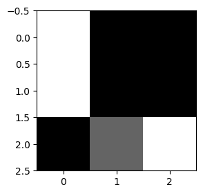
img.shape # (3,3)의 픽셀을 가진 흑백이미지로 해석할 수 있음.torch.Size([3, 3])- 빛의 3원색: ref - https://ko.wikipedia.org/wiki/%EC%9B%90%EC%83%89

- 우리가 보는 색상은 모두 (빨강,녹색,파랑)의 조합으로 나타낼 수 있음.
- (빨강,녹색,파랑)을 RGB라고 흔히 부름
- 칼라이미지의 이해
r = torch.tensor([[255,255,255,255],[255,255,255,255],[0,0,0,0],[0,0,0,0]])
g = torch.tensor([[0,0,0,0],[255,255,255,0],[255,255,255,0],[255,255,255,0]])
b = torch.tensor([[0,0,0,0],[0,255,255,255],[0,255,255,255],[0,255,255,255]])
print(r)
print(g)
print(b)
img = torch.stack([r,g,b],axis=-1)
plt.imshow(img)tensor([[255, 255, 255, 255],
[255, 255, 255, 255],
[ 0, 0, 0, 0],
[ 0, 0, 0, 0]])
tensor([[ 0, 0, 0, 0],
[255, 255, 255, 0],
[255, 255, 255, 0],
[255, 255, 255, 0]])
tensor([[ 0, 0, 0, 0],
[ 0, 255, 255, 255],
[ 0, 255, 255, 255],
[ 0, 255, 255, 255]])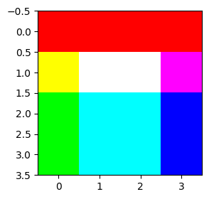
img.shape # (4,4)픽셀을 가진 칼라이미지로 해석torch.Size([4, 4, 3])- plt.imshow(...)에서 ...의 자료형이 정수(int)이면 빛의 밝기범위를 0~255로 자동인식하고 ...의 자료형이 소수(float)이면 빛의 밝기범위를 0~1사이의 값으로 인식함.
r = torch.tensor([[1,1,1,1],[1,1,1,1],[0,0,0,0],[0,0,0,0]])
g = torch.tensor([[0,0,0,0],[1,1,1,0],[1,1,1,0],[1,1,1,0]])
b = torch.tensor([[0,0,0,0],[0,1,1,1],[0,1,1,1],[0,1,1,1]])
print(r)
print(g)
print(b)
img = torch.stack([r,g,b],axis=-1)
plt.imshow(img)tensor([[1, 1, 1, 1],
[1, 1, 1, 1],
[0, 0, 0, 0],
[0, 0, 0, 0]])
tensor([[0, 0, 0, 0],
[1, 1, 1, 0],
[1, 1, 1, 0],
[1, 1, 1, 0]])
tensor([[0, 0, 0, 0],
[0, 1, 1, 1],
[0, 1, 1, 1],
[0, 1, 1, 1]])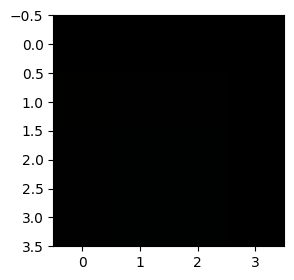
r = torch.tensor([[1,1,1,1],[1,1,1,1],[0,0,0,0],[0,0,0,0]]).float()
g = torch.tensor([[0,0,0,0],[1,1,1,0],[1,1,1,0],[1,1,1,0]]).float()
b = torch.tensor([[0,0,0,0],[0,1,1,1],[0,1,1,1],[0,1,1,1]]).float()
print(r)
print(g)
print(b)
img = torch.stack([r,g,b],axis=-1)
plt.imshow(img)tensor([[1., 1., 1., 1.],
[1., 1., 1., 1.],
[0., 0., 0., 0.],
[0., 0., 0., 0.]])
tensor([[0., 0., 0., 0.],
[1., 1., 1., 0.],
[1., 1., 1., 0.],
[1., 1., 1., 0.]])
tensor([[0., 0., 0., 0.],
[0., 1., 1., 1.],
[0., 1., 1., 1.],
[0., 1., 1., 1.]])
B. 데이터
- 데이터정리코드
train_dataset = torchvision.datasets.MNIST(root='./data',train=True,download=True)
to_tensor = torchvision.transforms.ToTensor()
X3 = torch.stack([to_tensor(Xi) for Xi, yi in train_dataset if yi==3],axis=0)
X7 = torch.stack([to_tensor(Xi) for Xi, yi in train_dataset if yi==7],axis=0)print(X3.shape) # 숫자3이 손글씨로 적힌 6131개의 이미지, 이미지의 픽셀은 (28,28)
plt.imshow(X3[0,:,:,:].reshape(28,28),cmap="gray")torch.Size([6131, 1, 28, 28])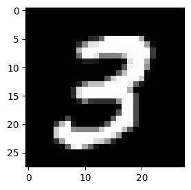
print(X7.shape) # 숫자7이 손글씨로 적힌 6265개의 이미지, 이미지의 픽셀은 (28,28)
plt.imshow(X7[-1,:,:,:].reshape(28,28),cmap="gray")torch.Size([6265, 1, 28, 28])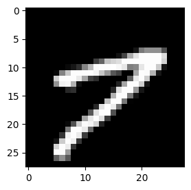
X = torch.concat([X3,X7],axis=0)
X.shapetorch.Size([12396, 1, 28, 28])Y = torch.tensor([0]*6131 + [1]*6265).reshape(-1,1).float() # 숫자3이면 Yi=0, 숫자7이면 Yi=1로 생각하자.X.shape, Y.shape(torch.Size([12396, 1, 28, 28]), torch.Size([12396, 1]))- 우리가하고싶은것: \({\bf X}:(n,1,28,28) \to {\bf Y}:(n,1)\) 인 규칙을 알아내고 싶음. \(\to\) 그렇지만 우리는 이런걸 배운적이 없는데? \(\to\) \({\bf X}:(n,784) \to {\bf Y}:(n,1)\) 인 규칙을 학습하자!!
X = X.reshape(-1,784)X.shape, Y.shape(torch.Size([12396, 784]), torch.Size([12396, 1]))C. 학습
net = torch.nn.Sequential(
torch.nn.Linear(in_features=784,out_features=32), # 784->32
torch.nn.ReLU(), # 32 -> 32
torch.nn.Linear(in_features=32,out_features=1),
torch.nn.Sigmoid()
)
loss_fn = torch.nn.BCELoss()
optimizer = torch.optim.Adam(net.parameters())
#---#
for epoch in range(200):
# step1
Yhat = net(X)
# step2
loss = loss_fn(Yhat,Y)
# step3
loss.backward()
# step4
optimizer.step()
optimizer.zero_grad()plt.plot(Y,'.')
plt.plot(net(X).data,'.',alpha=0.2)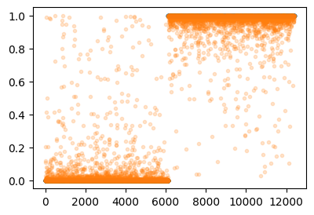
(Y == (net(X).data > 0.5).float()).sum() / 12396tensor(0.9895)- 결과가 아쉬워서 좀 더 돌려보면
for epoch in range(200):
# step1
Yhat = net(X)
# step2
loss = loss_fn(Yhat,Y)
# step3
loss.backward()
# step4
optimizer.step()
optimizer.zero_grad()plt.plot(Y,'.')
plt.plot(net(X).data,'.',alpha=0.2)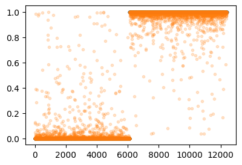
(Y == (net(X).data > 0.5).float()).sum() / 12396tensor(0.9927)4. 오버피팅 (시벤코정리의 이면)
- 언뜻 생각하면 “시벤코정리는 무적인가?” 하는 생각이 든다.
A. 오버피팅
- 오버피팅?
- 위키: In mathematical modeling, overfitting is the production of an analysis that corresponds too closely or exactly to a particular set of data, and may therefore fail to fit to additional data or predict future observations reliably. (수학적인 모델링에서 과적합이란 “어떤 모델이 주어진 데이터에 너무 꼭 맞춰져 있어서, 새로운 데이터 미래의 결과를 잘 예측하지 못할수 있는 상태”를 의미한다.)
- 통계학과는 “데이터=언더라잉스트럭처+오차항”의 관점에서 봄. 모델은 언더라잉스트럭처를 적합해야함. 그런데 만약에 모델이 오차항을 적합하고 있으면 그건 오버피팅이라 부름.
B. 오버피팅의 예시
- 시벤코정리: \(m\)이 매우 클때
- \({\bf X}_{n\times 784} \overset{linr}{\to} {\bf U}^{(1)}_{n\times m} \overset{relu}{\to} {\bf V}^{(1)}_{n\times m} \overset{linr}{\to} {\bf U}^{(2)}_{n\times 1}\overset{sig}{\to} {\bf V}^{(2)}_{n\times 1}=\hat{\bf Y}_{n\times 1}\)
- \({\bf X}_{n\times 1} \overset{linr}{\to} {\bf U}_{n\times m} \overset{relu}{\to} {\bf V}_{n\times m} \overset{linr}{\to}\hat{\bf Y}_{n\times 1}\)
이러한 종류의 네트워크는 거의 무엇이듯 맞출 수 있다고 생각할 수 있다.
- 그런데 종종 맞추지 말아야 할 것도 맞춘다.
- 아래와 같은 모델을 가정하자. (지금은 박혜원씨처럼 관측하는 상태가 아니고 신처럼 데이터를 만드는 상황)
\[\text{model}: y_i = (0 \times x_i) + \epsilon_i, \quad \epsilon_i \sim N(0,0.01^2)\]
torch.manual_seed(5)
X = torch.linspace(0,1,100).reshape(100,1)
Y = X*0 + torch.randn(100).reshape(100,1)*0.01
plt.plot(X,Y,'--o')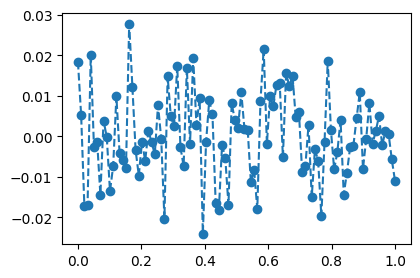
torch.manual_seed(1)
net = torch.nn.Sequential(
torch.nn.Linear(1,512),
torch.nn.ReLU(),
torch.nn.Linear(512,1)
)
loss_fn = torch.nn.MSELoss()
optimizer = torch.optim.Adam(net.parameters())
#---#
for epoch in range(1000):
# step1
Yhat = net(X)
# step2
loss = loss_fn(Yhat,Y)
# step3
loss.backward()
# step4
optimizer.step()
optimizer.zero_grad()plt.plot(X,Y,'--o',alpha=0.5)
plt.plot(X,net(X).data,'--')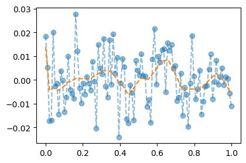
C. 오버피팅이라는 증거
torch.manual_seed(5)
Xall = torch.linspace(0,1,100).reshape(100,1)
Yall = Xall*0 + torch.randn(100).reshape(100,1)*0.01
X = Xall[:80,:]
Y = Yall[:80,:]
XX = Xall[80:,:]
YY = Yall[80:,:]plt.plot(Xall,Yall,'--o',color="gray",alpha=0.3)
plt.plot(X,Y,'--o',label="training")
plt.plot(XX,YY,'--o',label="test")
plt.legend()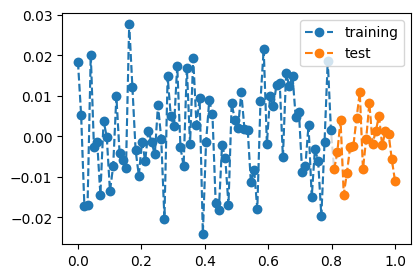
- train만 학습
torch.manual_seed(1)
net = torch.nn.Sequential(
torch.nn.Linear(1,512),
torch.nn.ReLU(),
torch.nn.Linear(512,1)
)
loss_fn = torch.nn.MSELoss()
optimizer = torch.optim.Adam(net.parameters())
#---#
for epoch in range(1000):
# step1
Yhat = net(X)
# step2
loss = loss_fn(Yhat,Y)
# step3
loss.backward()
# step4
optimizer.step()
optimizer.zero_grad()- 적합결과 관찰
plt.plot(X,Y,'--o',label="training",alpha=0.2)
plt.plot(XX,YY,'--o',label="test",alpha=0.2)
plt.plot(X,net(X).data,'--',color="C0")
plt.legend()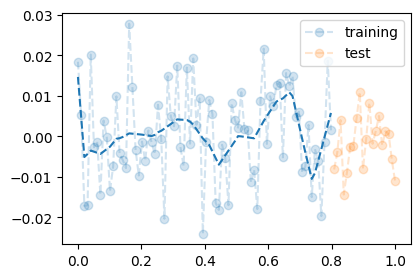
- training에서는 그럭저럭 잘맞춤
- 새로운데이터(예측)
plt.plot(X,Y,'--o',label="training",alpha=0.2)
plt.plot(XX,YY,'--o',label="test",alpha=0.2)
plt.plot(X,net(X).data,'--',color="C0")
plt.plot(XX,net(XX).data,'--',color="C1")
plt.legend()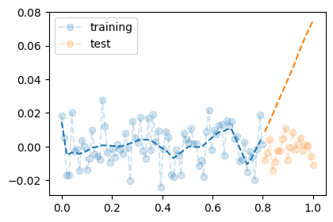
- training에서는 그럭저럭 괜찮았는데, test에서는 망했다.
loss_fn(net(X),Y)tensor(9.5141e-05, grad_fn=<MseLossBackward0>)loss_fn(net(X)*0,Y)tensor(0.0001, grad_fn=<MseLossBackward0>)D. 시벤코의 항변
# 시벤코정리의 올바른 이해
하나의 은닉층을 가지는 아래와 같은 꼴의 네트워크는
net = torch.nn.Sequential(
torch.nn.Linear(p,??),
torch.nn.Sigmoid(), ## <- 여기에 렐루를 써도 된다.
torch.nn.Linear(??,q)
)모든 보렐가측함수
\[f: {\bf X}_{n\times p} \to {\bf Y}_{n\times q}\]
를 원하는 정확도로 “근사”시킬 수 있다. (노드숫자를 키울수록 더 정확하게 근사됨) 즉 시벤코 정리를 사용하면 \({\bf X} \to {\bf Y}\)인 어떠한 복잡한 규칙이라도 net가 찾을 수 있다는 의미이다. 그러나 이러한 규칙이 보지 못한 데이터 (처음보는자료, unseen data, test data) \(({\bf XX}, {\bf YY})\)에 대해서도 올바르게 보장된다라는 이야기를 한 적은 없다. 시벤코는 그냥 net가 가진 표현력의 한계를 수학적으로 밝힌것 뿐이다.
#
5. 드랍아웃
- 오버피팅에 대한 해결책: 드랍아웃
- 데이터: 이전의 그 데이터
torch.manual_seed(5)
Xall = torch.linspace(0,1,100).reshape(100,1)
Yall = Xall*0 + torch.randn(100).reshape(100,1)*0.01
X = Xall[:80,:]
Y = Yall[:80,:]
XX = Xall[80:,:]
YY = Yall[80:,:]
plt.plot(X,Y,'--o')
plt.plot(XX,YY,'--o')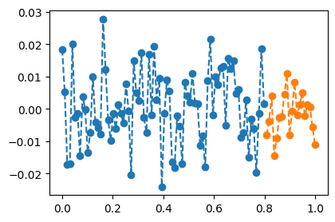
- 학습: 이전의 그 네트워크를 학습, 그런데 수정된건 dropout layer추가
torch.manual_seed(1)
net = torch.nn.Sequential(
torch.nn.Linear(1,512),
torch.nn.ReLU(),
torch.nn.Dropout(0.8), # 이 레이어는 독특하게 학습할때 역할과 예측할때 역할이 다름.
torch.nn.Linear(512,1)
)
loss_fn = torch.nn.MSELoss()
optimizer = torch.optim.Adam(net.parameters())
#---#
for epoch in range(1000):
# step1
Yhat = net(X) # 이때 net는 학습을하고있음.
# step2
loss = loss_fn(Yhat,Y)
# step3
loss.backward()
# step4
optimizer.step()
optimizer.zero_grad()- 결과시각화 (잘못된사용)
plt.plot(X,Y,'--o',color="C0",alpha=0.3)
plt.plot(X,net(X).data,'--',color="C0") # 이때 net은 예측을 하고 있음. (그래서 이 net의 성능이 평가받고있음)
plt.plot(XX,YY,'--o',color="C1",alpha=0.3)
plt.plot(XX,net(XX).data,'--',color="C1") # 이때 net은 예측을 하고 있음. (그래스 이 net의 성능이 평가받고있음)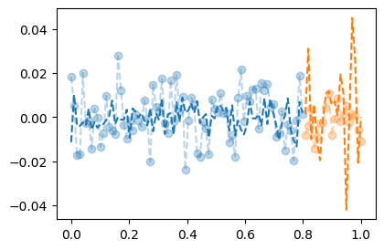
- 결과시각화 (올바른사용)
net.trainingTruenet에 저장된 attribute중 training이 있는데 이것이 True로 저장되어있음.net가 학습모드라는 의미
net.eval() # net가 이제 train의 역할을 하지 않고 evaluation의 역할을 하도록Sequential(
(0): Linear(in_features=1, out_features=512, bias=True)
(1): ReLU()
(2): Dropout(p=0.8, inplace=False)
(3): Linear(in_features=512, out_features=1, bias=True)
)- 위의코드를 실행하면 net.training 이 False 로 전환
net.trainingFalseplt.plot(X,Y,'--o',color="C0",alpha=0.3)
plt.plot(X,net(X).data,'--',color="C0") # 이때 net은 예측(평가)을 하고 있음
plt.plot(XX,YY,'--o',color="C1",alpha=0.3)
plt.plot(XX,net(XX).data,'--',color="C1") # 이때 net은 예측(평가)을 하고 있음.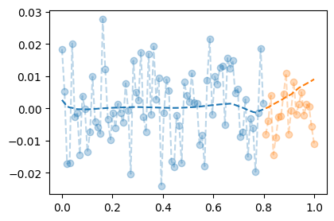
- 드랍아웃레이어를 넣었을 뿐인데, 오버피팅이슈가 완화되었다!
B. 드랍아웃 레이어
- 드랍아웃레이어의 동작을 알아보기 위해서 아래와 같이 텐서 u와 드랍아웃변환 d를 준비하자.
u = torch.randn(10,2)
d = torch.nn.Dropout(0.9)utensor([[ 1.4645, 2.2101],
[-1.0409, 0.3758],
[ 1.5496, 1.2014],
[ 1.1330, 0.8001],
[ 0.2863, 0.0025],
[-0.0217, -0.0475],
[-0.5838, 1.6023],
[-1.1729, -0.9439],
[-0.8806, 0.9566],
[-0.4359, 0.5812]])d(u)tensor([[ 0.0000, 0.0000],
[-10.4094, 0.0000],
[ 0.0000, 0.0000],
[ 0.0000, 0.0000],
[ 0.0000, 0.0000],
[ -0.0000, -0.0000],
[ -0.0000, 0.0000],
[ -0.0000, -0.0000],
[ -0.0000, 0.0000],
[ -4.3594, 0.0000]])- 90%드랍아웃: 입력 중 임의로 90%를 골라서 0으로 만든다 + 10%이 확률로 살아남은 숫자는 10배만큼 값이 커진다.
- 80%드랍아웃: 입력 중 임의로 80%를 골라서 0으로 만든다 + 20%이 확률로 살아남은 숫자는 5배만큼 값이 커진다.
- 50%드랍아웃: 입력 중 임의로 50%를 골라서 0으로 만든다 + 50%이 확률로 살아남은 숫자는 2배만큼 값이 커진다.
- 드랍아웃레이어의 성질: net.train(), net.eval() 로 dropout layer를 on/off 할 수 있다.
u = torch.randn(10,2)
utensor([[-0.9490, 0.8282],
[-0.4990, 0.6322],
[ 0.3571, 0.0601],
[ 0.1919, -0.4767],
[-1.2675, -0.7150],
[-2.0703, -0.7793],
[ 0.8351, -1.3805],
[-0.9620, 1.3993],
[ 0.4413, -0.4300],
[-0.7794, -0.3061]])net = torch.nn.Sequential(
torch.nn.Dropout(0.9)
)
netSequential(
(0): Dropout(p=0.9, inplace=False)
)u,net(u)(tensor([[-0.9490, 0.8282],
[-0.4990, 0.6322],
[ 0.3571, 0.0601],
[ 0.1919, -0.4767],
[-1.2675, -0.7150],
[-2.0703, -0.7793],
[ 0.8351, -1.3805],
[-0.9620, 1.3993],
[ 0.4413, -0.4300],
[-0.7794, -0.3061]]),
tensor([[-0.0000, 0.0000],
[-0.0000, 0.0000],
[ 0.0000, 0.0000],
[ 1.9190, -0.0000],
[-0.0000, -0.0000],
[-0.0000, -0.0000],
[ 0.0000, -0.0000],
[-0.0000, 13.9925],
[ 0.0000, -0.0000],
[-7.7937, -0.0000]]))net.trainingTruenet.eval() # net.training 이 FalseSequential(
(0): Dropout(p=0.9, inplace=False)
)u,net(u)(tensor([[-0.9490, 0.8282],
[-0.4990, 0.6322],
[ 0.3571, 0.0601],
[ 0.1919, -0.4767],
[-1.2675, -0.7150],
[-2.0703, -0.7793],
[ 0.8351, -1.3805],
[-0.9620, 1.3993],
[ 0.4413, -0.4300],
[-0.7794, -0.3061]]),
tensor([[-0.9490, 0.8282],
[-0.4990, 0.6322],
[ 0.3571, 0.0601],
[ 0.1919, -0.4767],
[-1.2675, -0.7150],
[-2.0703, -0.7793],
[ 0.8351, -1.3805],
[-0.9620, 1.3993],
[ 0.4413, -0.4300],
[-0.7794, -0.3061]]))- 드랍아웃레이어의 정리
- 계산: (1) 입력의 일부를 임의로 0으로 만드는 역할 (2) 0이 안된것들은 스칼라배함
- on/off: net.train()을 사용하여 dropout layer를 활성화 할 수 있고, net.eval()을 사용하여 dropout layer를 비활성화 할수도 있다. (보통 학습/훈련의 경우는 dropout layer를 활성화하고, 예측/평가의 경우는 dropout layer를 비활성화한다)
- 이해 (1번제외하고는 시험X)
- 드랍아웃 layer를 추가하니 어떠한 신비한 현상으로 오버피팅이 억제되는 효과가 있다는 것을 실험적으로 관찰하였다.
- 드랍아웃은 학습을 방해하는 느낌을 준다. 그래서 학습이 오히려 잘 안되게 한다. 그래서 training에서 잘 못맞추게 만들어서 오버피팅을 막는다.
- 랜덤으로 0이 되다보니까 학습할때 \({\bf Y} \approx \hat{\bf Y}\)이 되도록 만들 수 있는 몇개의 특징적인 기술 위주로 학습하지 않고 전체적인 특징을 골고루 보게 된다.
- 사실 랜덤포레스트 아이디어랑 같음.
C. 드랍아웃 레이어의 위치
- ReLU, dropout의 특이한 성질: \(\text{dropout}(\text{relu}({\bf X}))=\text{relu}(\text{dropout}({\bf X}))\)
u = torch.randn(10,2)
r = torch.nn.ReLU()
d = torch.nn.Dropout()torch.manual_seed(0)
r(d(u))tensor([[-0.0000, -0.0000],
[4.0484, -0.0000],
[0.0000, 0.0000],
[0.4972, 0.0000],
[-0.0000, 0.0000],
[0.0000, 0.0000],
[0.8571, 0.0000],
[0.0000, 3.2206],
[0.0000, 0.0000],
[-0.0000, -0.0000]])torch.manual_seed(0)
d(r(u))tensor([[0.0000, 0.0000],
[4.0484, 0.0000],
[0.0000, 0.0000],
[0.4972, 0.0000],
[0.0000, 0.0000],
[0.0000, 0.0000],
[0.8571, 0.0000],
[0.0000, 3.2206],
[0.0000, 0.0000],
[0.0000, 0.0000]])- 다른 활성화함수는 성립안함.
u = torch.randn(10,2)
s = torch.nn.Sigmoid()
d = torch.nn.Dropout()torch.manual_seed(0)
s(d(u))tensor([[0.5000, 0.5000],
[0.7550, 0.5000],
[0.5000, 0.5000],
[0.7339, 0.2347],
[0.5000, 0.8629],
[0.9022, 0.9295],
[0.0478, 0.5000],
[0.7091, 0.9340],
[0.0370, 0.2498],
[0.5000, 0.5000]])torch.manual_seed(0)
d(s(u))tensor([[0.0000, 0.0000],
[1.2742, 0.0000],
[0.0000, 0.0000],
[1.2484, 0.7128],
[0.0000, 1.4301],
[1.5046, 1.5683],
[0.3661, 0.0000],
[1.2191, 1.5801],
[0.3278, 0.7318],
[0.0000, 0.0000]])- 드랍아웃 레이어는 아래와 같이 활성화함수 뒤에 위치해야함.
net = torch.nn.Sequential(
torch.nn.Linear(1,512),
torch.nn.ReLU(),
torch.nn.Dropout(0.8),
torch.nn.Linear(512,1)
)- 그런데 활성화함수가 렐루일 경우에는 아래와 같이 드랍아웃과 렐루의 위치를 바꿔도 상관없다.
net = torch.nn.Sequential(
torch.nn.Linear(1,512),
torch.nn.Dropout(0.8),
torch.nn.ReLU(),
torch.nn.Linear(512,1)
)- 심지어 보통 네트워크는 위와 같은 형태가 많음. (왜냐하면 계산효율이 더 좋음)